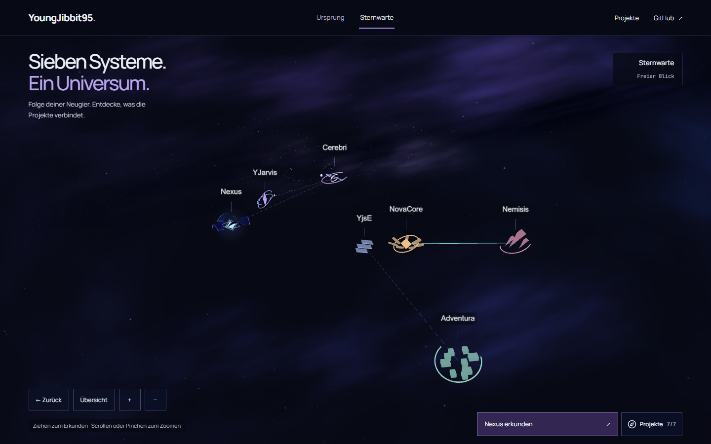
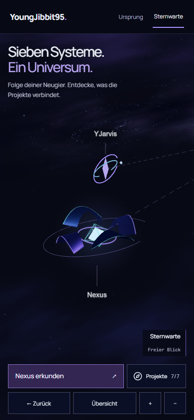
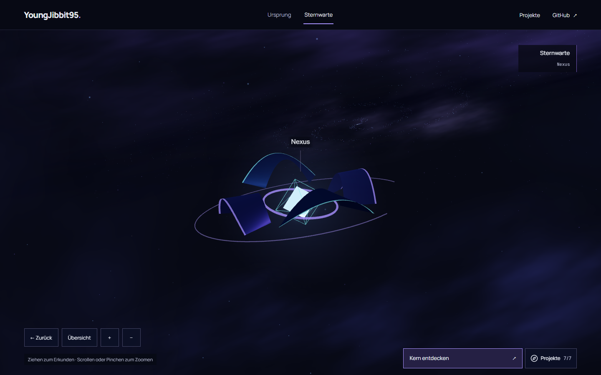
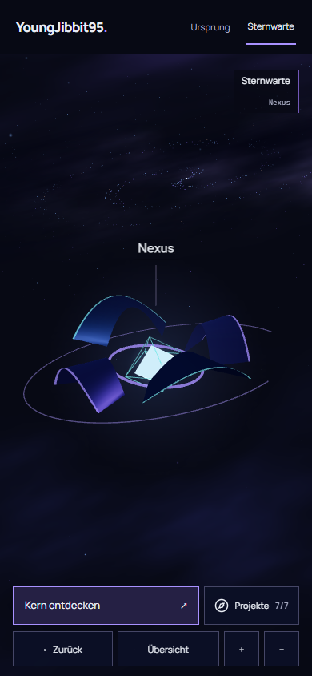
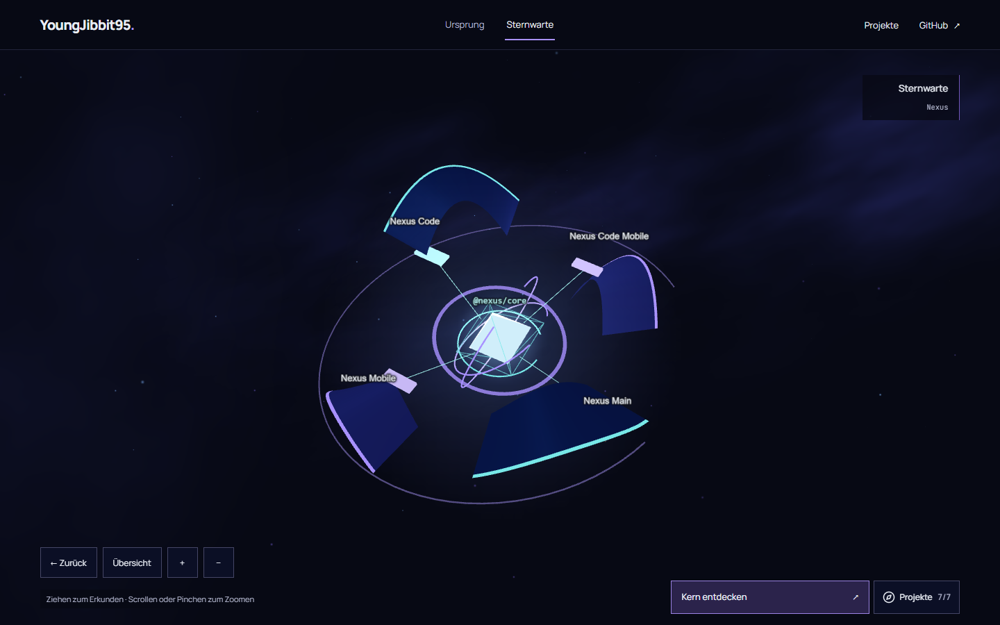
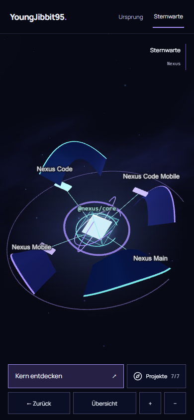
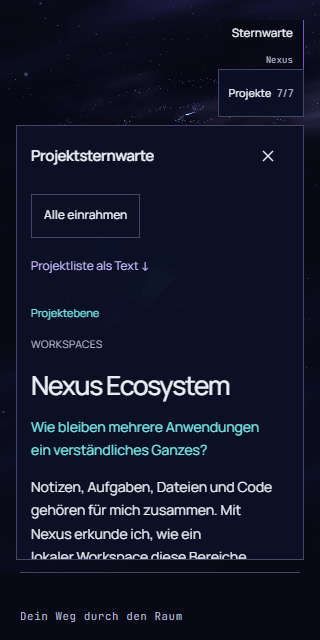
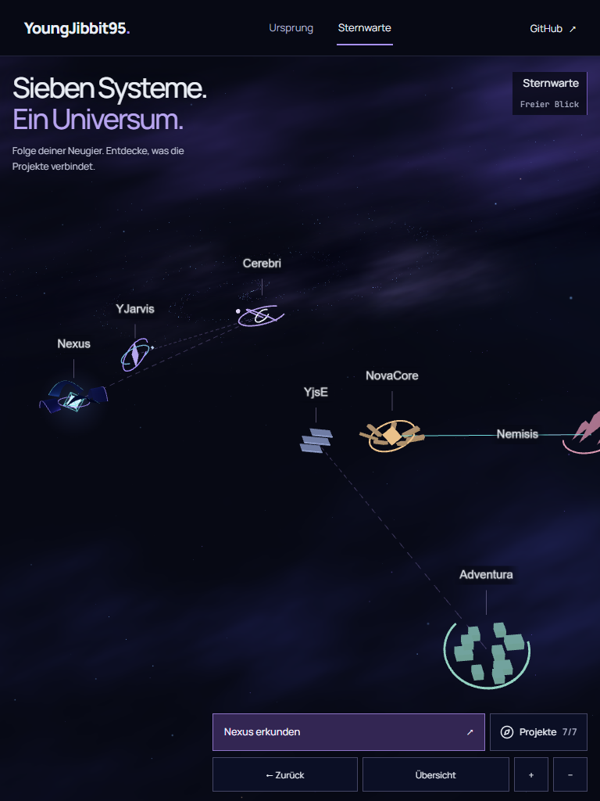

G2-D · Nebelraum · 14. Oktober 2026
Begrenzter Folgepass am bestehenden Cosmic Slice. Alle Bilder zeigen echte Browserpixel aus
derselben React-Three-Fiber-Anwendung. Keine Mockups, keine Bildmontage. Die sechs finalen
Szenen zeigen den Code-Checkpoint 4bf2ece.
Visuelle Freigabe offen: Labels, mobile Bedienung und Nexus-Detail sind verbessert. Die Desktopkarte wirkt zusammenhängender, aber noch nicht überzeugend monumental. Technisch bestandene Prüfungen entscheiden diese Gestaltungsfrage nicht.



Gleiche sieben Projekte, gleiche Koordinaten. 2.800 Sterne liegen in echten räumlichen Schichten. Die entfernte Sternlinse ist eine künstlerische Landmarke. Das diagonale Band besteht weiterhin aus kameraorientierten Nebelflächen, nicht aus volumetrischem Gas.
Die vier Segel bleiben zunächst geschlossen. Andere Systeme und entfernte Beziehungslinien treten bei dieser Nahansicht zurück; die normale freie Erkundung bleibt erhalten.


Die tatsächliche Kameradistanz öffnet dieselben vier Segel. Lichtwege enden an den sichtbaren Clientmodulen. Alle vier Namen und @nexus/core bleiben auf beiden Größen vollständig sichtbar.


Zusätzliche echte UI-Aufnahmen aus der vollständigen Root-Suite auf Code-Checkpoint 4bf2ece, nach der letzten Nebelpolitur. Sie belegen Dossier, Touch-Flächen und Layout. Labels werden auf vier Breiten automatisch geprüft.


Dieser Checkpoint endet hier zur visuellen Nutzerentscheidung. Origin-Storyboard und weitere Detailwelten gehören nicht zu diesem Auftrag.